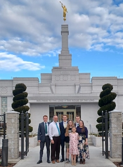

Jacob Simper | WDD 130
Hi! I am Jacob Simper, origionaly from Tooele Utah but noe live in Peck, Idaho. I love the outdoors and spending time with my family there. I especially like hiking, camping, hunting, fishing, and trail running. I have been home from my full time mission, in South Carolina, for a year and am currently doing BYU pathways while helping build my grandperants home.